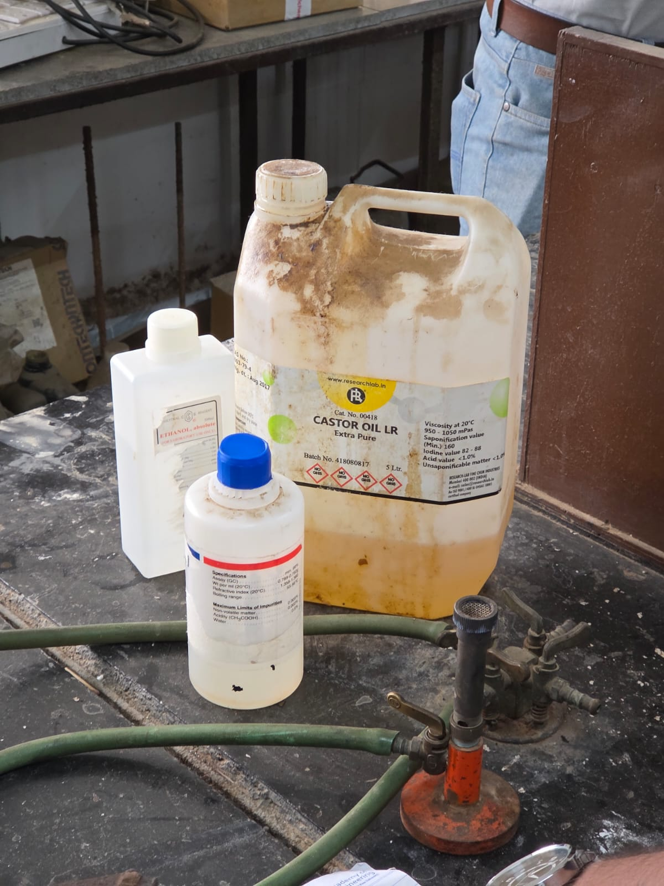

Tap a pin on the photo to see what each item on our bench is.
Oil phase · 2 mL

Castor plant (Ricinus communis), the source of the oil. Photo: Wikimedia Commons.
Why we used castor oil
It was the only oil available in our lab, so it took the oil-phase role in our batch. It turned out to be a sensible stand-in for demonstrating the process:
- It dissolves in ethanol. Most fatty oils don't. Castor oil's main fatty acid, ricinoleic acid, carries a hydroxyl (–OH) group, which lets it mix with alcohol.
- It's thick and slow to evaporate, so the film it leaves on skin lasts longer than a thin oil.
- It's gentle on skin and has little smell, so the scent is easy to judge.
Honest limit: castor oil is not a recognised mosquito repellent. Our prototype shows the formulation method. For real protection, replace it with citronella or lemongrass oil (or add one alongside it).
.jpg?width=640)